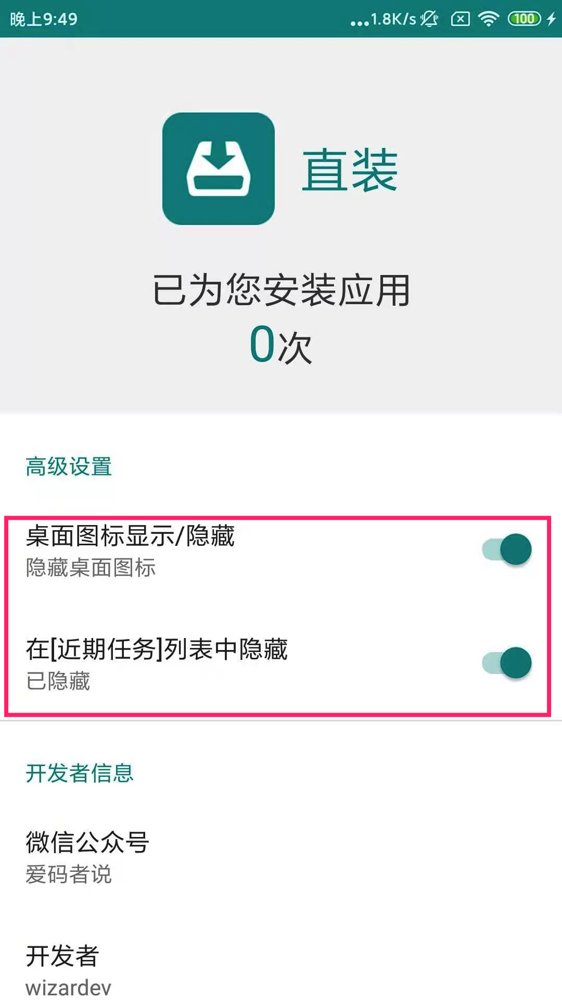

动手开发了一款微信插件，这也太好用了吧
不知道你在使用微信时有没有遇到这种情况，就是想让别人通过微信发给你一个apk文件（就是安卓的安装包）,当你接收到文件，却发现文件的名称后面追加了.1，比如别人发你的是xxx.apk，你收到的时候变成了xxx.apk.1，这时这个软件你就安装不了了。
不过有一种解决办法，就是你要找到这个下载的文件，然后将文件的名称改为以apk为结尾的文件。虽然是一种解决办法，但是明显不容易操作，首先是这个文件不好找，还有就是找到了这个文件不是专业的人士也不知道要把后面的文件改成以apk为结尾的文件。
这时我就想要是能在收到这个文件的时候，在微信里面点击“用其他应用打开”，能够直接安装那就太好了，于是自己研究了一番，找到了直接在微信中安装应用的方法，最后做成了一款软件，能实现在微信中点击收到的安装包文件直接安装。

看到这里你可能会说，你不是开发的是微信插件吗？最后怎么成一款软件了？别急，下面我就教你怎么把这个软件伪装成微信插件，很简单，你只要把下图的两个选项打开就行了，这时我开发的这个软件就会从你的桌面和最近任务栏消失，这样就可以伪装成微信的插件了。
最后放出这个软件的下载方式，公众号内回复”直装“获取下载链接。

本博客所有文章除特别声明外，均采用 CC BY-NC-SA 4.0 许可协议。转载请注明来自 wizardev的博客！
评论